3D / MaterialXem dự án nguồn ↗
3D / Material
Premium 3D Card Animation ↗
Armin
Học gì: Nguồn mô tả Blender, vật liệu premium và bố cục tiết chế.
Áp dụng: Dùng làm đối chiếu cho bộ thẻ hiện tại; thử ánh sáng ở đúng kích thước mobile.
Đọc trang nguồnSáu hướng cho Home kết nối loyalty, V-Smart Pay, mini app và AI. Mỗi hướng có câu chuyện, công thức 5 layer, reference, đầu vào cần có và một phép thử motion.
Nhân viên tập đoàn và khách hàng thân thiết; có người tích nhiều VPoint nhưng ít mở app.
Biết mình đang có gì → tìm việc cần làm → dùng nguồn giá trị và quyền lợi phù hợp.
Tầm nhìn tương lai. Được làm mới nhận diện, layout, component. Premium và tương lai là tiêu chí chung.
Bộ nội dung dùng chung: định danh hội viên; VPoint; số dư ví; Quét / Chuyển / Hóa đơn; mini app; voucher; gợi ý theo bối cảnh. Mỗi hướng được quyền thay hierarchy để thể hiện ý tưởng.
Phân biệt: tiền ví và VPoint hiển thị riêng. Chuyển tiền, chuyển điểm, rút tiền và đổi voucher có nhãn riêng. Khả năng thanh toán học phí bằng điểm sẽ được ghi là giả định concept khi chưa có quy tắc xác nhận.
Asset hiện có · gold study · 0.8 giây. Các tên vật liệu chưa ánh xạ sang hạng chính thức.
Đã xem các khung hình trích từ IMG_6584.MOV: thẻ và ánh sáng là điểm nổi bật; phần dưới gồm nhiều cụm AI, promo, icon dịch vụ và sự kiện có độ nổi bật gần nhau.
Đề xuất: chọn một ý tưởng xuyên từ thẻ/hero đến layout, ảnh, icon và transition. Từng module phải phục vụ nhu cầu hoặc câu chuyện rõ.
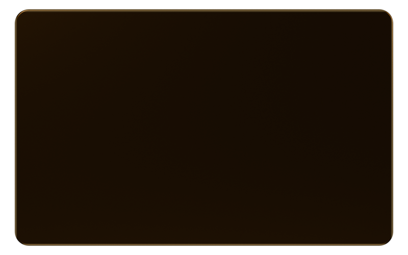
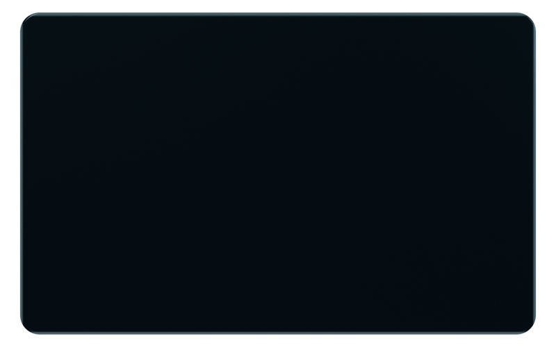
Kính tạo tầng điều khiển; satin/metal tạo vật phẩm sở hữu. Vùng số dư và xác nhận cần đọc rõ.
Apple Materials ↗Gợi ý theo tình huống và đưa tới việc cần làm. Trạng thái listening/thinking có hình thức riêng.
AI Travel Concierge ↗Một hình khối hoặc chuyển tiếp được chăm chút có thể định hình concept; thử nó ở kích thước Home thật.
Synthetic Human ↗Đây là tổng hợp định tính từ nhóm reference; không phải thống kê độ phổ biến của toàn ngành. Reference cũ được giữ khi có nguyên lý hữu ích.
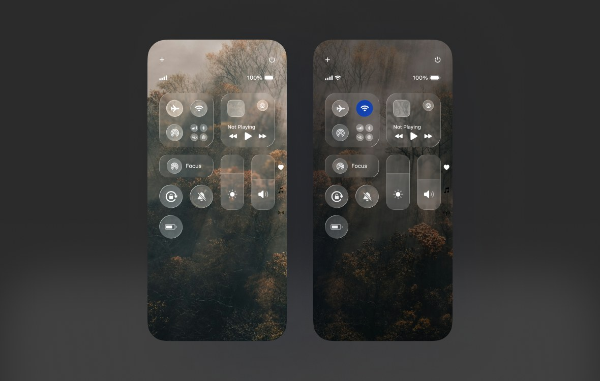
02Những lớp giá trị trong suốt
Ảnh reference có nguồn trong recipe bên dưới.
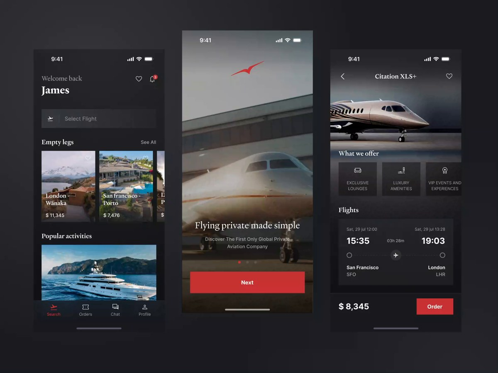
03Một thế giới được tuyển chọn
Ảnh reference có nguồn trong recipe bên dưới.
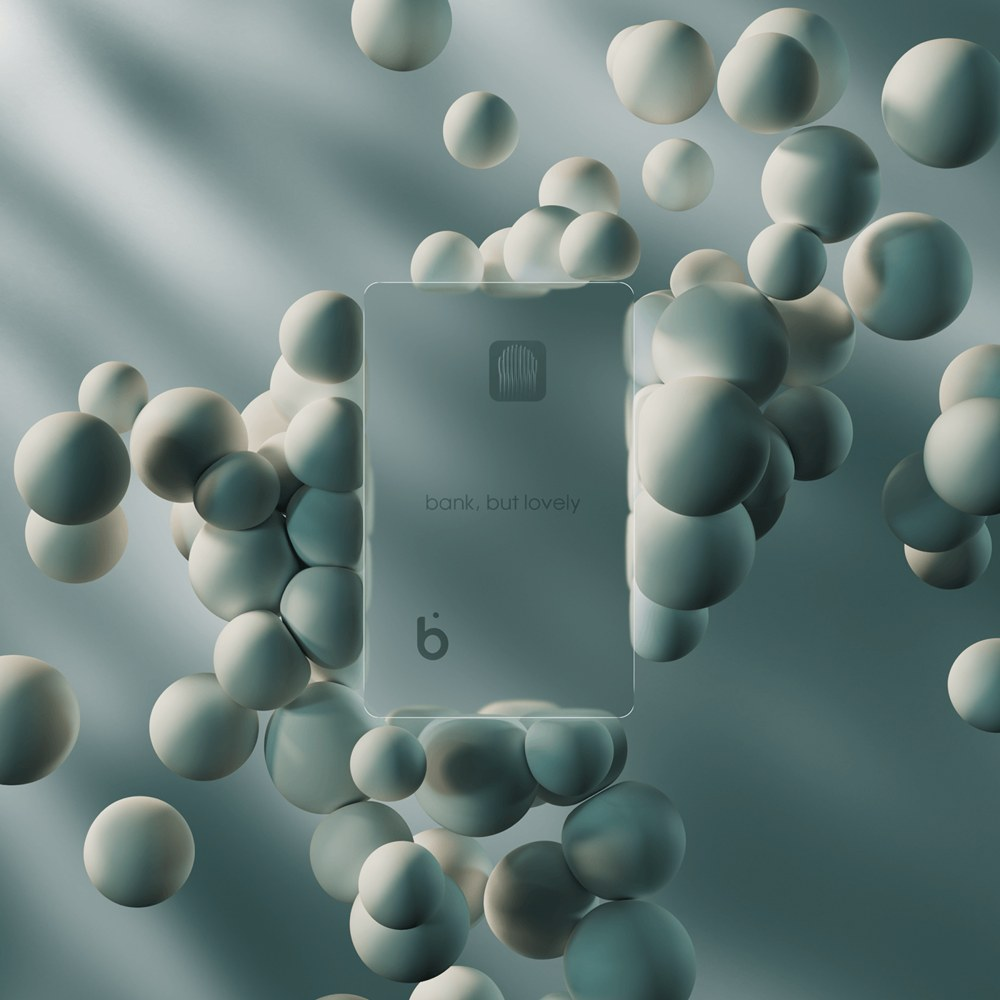
04Cánh cửa vào hệ sinh thái
Ảnh reference có nguồn trong recipe bên dưới.
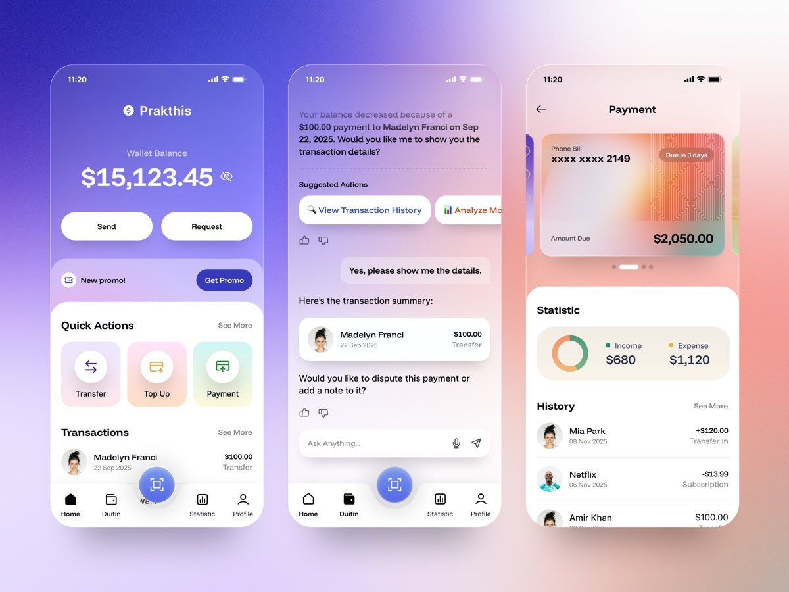
05Một ngày được chuẩn bị cho bạn
Ảnh reference có nguồn trong recipe bên dưới.
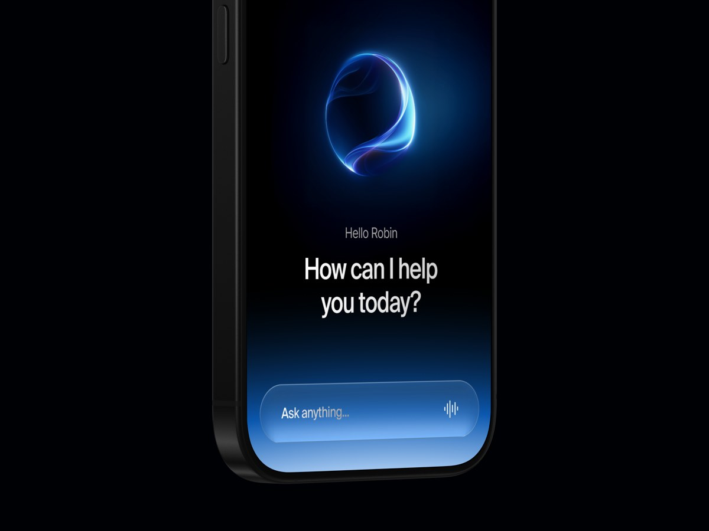
06Giá trị hiện ra bằng ánh sáng
Ảnh reference có nguồn trong recipe bên dưới.
Giá trị được chế tác
Cảm giác sở hữu và kiểm soát giá trị. Thẻ hội viên là vật phẩm mở vào điểm, ví và quyền lợi.
Độ đầu tư concept: Vừa · đánh giá định tính
Cảm giác sở hữu và kiểm soát giá trị. Thẻ hội viên là vật phẩm mở vào điểm, ví và quyền lợi.
Header gọn → thẻ hội viên có VPoint → số dư ví riêng → Quét / Chuyển / Hóa đơn → gợi ý dùng điểm → mini app → đặc quyền.
Chạm thẻ mở bảng điểm và quyền lợi; số dư ví mở V-Smart Pay. Chuyển VPoint và chuyển tiền có nhãn riêng. Sau thanh toán hiển thị điểm còn lại.
Grotesk sắc nét; số tabular; kim loại satin; nền tối sâu và vùng nội dung sáng có chủ đích. Icon mảnh, hình học trưởng thành.
0–1s ánh sáng lướt bevel → 1–3s thẻ nghiêng rất nhẹ và mở rộng → 3–6s hiện hành động dùng điểm. Đây là motion đề xuất, chưa được render.
Số dư VPoint mẫu; số dư ví mẫu; hạng hội viên; 2 quyền lợi tương ứng; quy tắc sử dụng điểm cho tình huống demo.
Tái dùng 4 material study trong Blender; cần thêm mặt thẻ, dấu thương hiệu, bố cục chữ và một transition mở thẻ.
Dễ thành một app ngân hàng đen/vàng thông thường nếu toàn bộ sáng tạo dồn vào thẻ.
Armin
Học gì: Nguồn mô tả Blender, vật liệu premium và bố cục tiết chế.
Áp dụng: Dùng làm đối chiếu cho bộ thẻ hiện tại; thử ánh sáng ở đúng kích thước mobile.
Đọc trang nguồn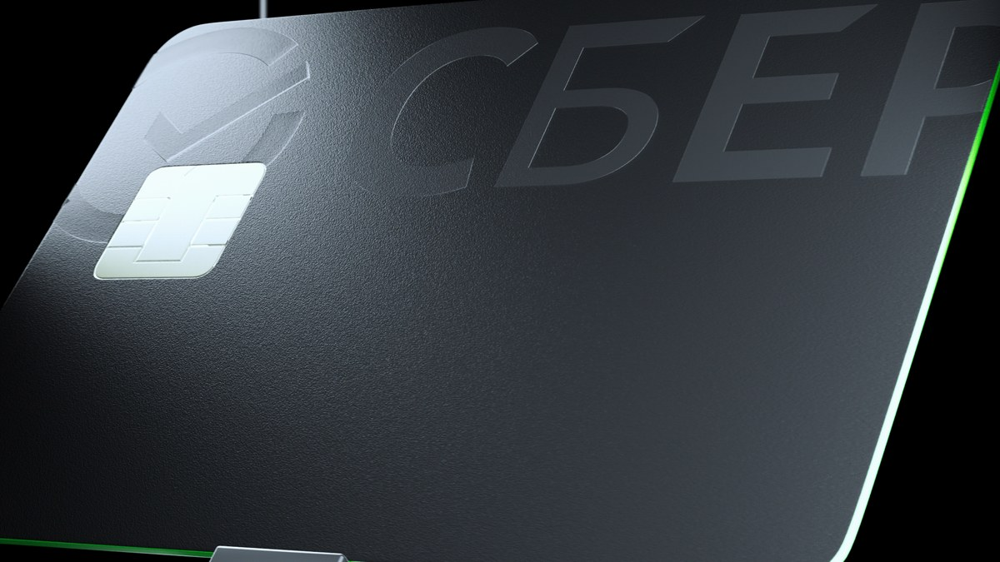
Nick Fedianin
Học gì: Bề mặt mờ, bevel mảnh và highlight tập trung tạo độ sắc.
Áp dụng: Dùng chất liệu kim loại cho một điểm nhấn; chữ số UI đặt trên lớp riêng.
Đã xem thumbnail; chưa xem toàn bộ videoPortfolio trên Behance
Học gì: Tương phản vật liệu thô và kim loại làm vật phẩm có trọng lượng.
Áp dụng: Thử hero vật phẩm trong đoạn mở đầu video; Home cần giản lược bối cảnh.
Đã xem thumbnail; chưa xem toàn bộ videoRobin Holesinsky
Học gì: Thẻ và dữ liệu tài chính cần cùng một hierarchy tiết chế.
Áp dụng: Thẻ hội viên dẫn vào VPoint; số dư ví vẫn có nhãn và hành động riêng.
Đọc trang nguồnALEX BENDER / FANCY
Học gì: Một tác vụ tài chính có thể có một vật thể đại diện rõ ràng.
Áp dụng: Thử thẻ mở thành bảng quyền lợi khi user chạm; cần mở nguồn để xem motion đầy đủ.
Đọc trang nguồnALEX BENDER / FANCY
Học gì: Dùng thao tác nạp làm điểm xuất phát cho nghiên cứu chuyển động.
Áp dụng: Thử feedback nạp ví hoặc nhận điểm có điểm bắt đầu và kết thúc cụ thể.
Đọc trang nguồnNhững lớp giá trị trong suốt
Cảm giác liền mạch. Home và mini app cùng nằm trong một không gian có lớp điều khiển thống nhất.
Độ đầu tư concept: Vừa–cao · đánh giá định tính
Cảm giác liền mạch. Home và mini app cùng nằm trong một không gian có lớp điều khiển thống nhất.
Header + định danh → module điểm/tiền nền rõ → action nhanh → module nhu cầu → dịch vụ → dock kính nổi.
Thanh tìm kiếm mở thành panel AI; dock giữ vị trí khi vào mini app; chuyển tiếp bảo toàn entry và đường quay lại. Blur không tác động chữ số.
Sans trung tính; pearl/smoke; kính tập trung ở dock, chip và panel transient; thẻ nội dung rõ; đỏ dùng ở một điểm dẫn mắt.
0–2s dock xuất hiện → 2–4s một pill mở thành panel → 4–7s nội dung mini app tiếp nối. Test biến hình và contrast cùng lúc.
Navigation chính; mini app đầu tiên; trạng thái panel; thông tin điểm và tiền; nền tương ứng 2 theme.
Shader/refraction study hoặc video render cho signature; mask/blur cho prototype; nền đơn giản để kiểm tra chữ.
Dễ giống iOS hoặc thành kính phủ khắp màn; cần chứng minh bản sắc riêng ở typography và cấu trúc.
Apple
Học gì: Apple phân biệt Liquid Glass cho lớp điều khiển với lớp nội dung.
Áp dụng: Dùng kính cho dock và chuyển tiếp điều khiển; nội dung thanh toán cần đọc rõ.
Đọc trang nguồnApple
Học gì: Nguồn giải thích phản ứng, thích nghi và tính chất quang học của vật liệu.
Áp dụng: Thử thanh tìm kiếm mở thành panel bằng hình khối liên tục; xem video nguồn để đối chiếu.
Đọc trang nguồnDear Regita Permatasari
Học gì: Panel trong suốt có độ sâu khi nền và mép được kiểm soát.
Áp dụng: Thử lớp điều hướng nổi; giữ số dư và nội dung chính trên nền rõ.
Đọc nguồn + xem thumbnailPaperpillar
Học gì: Thumbnail phối tác vụ ví với đề xuất AI và hóa đơn.
Áp dụng: Đưa gợi ý gắn với việc cần làm, như hóa đơn sắp đến hạn.
Đọc nguồn + xem thumbnail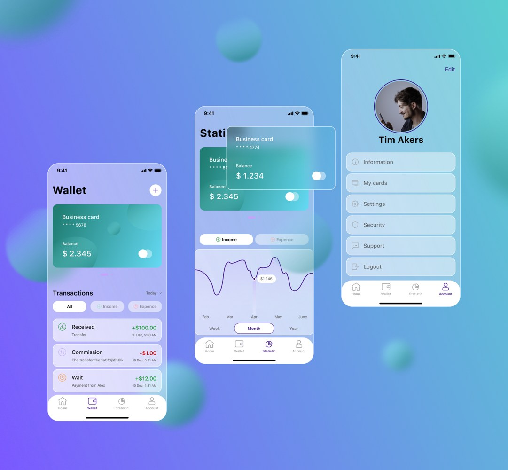
Ira Sh
Học gì: Kính và gradient có thể liên kết nhiều màn theo cùng một chất liệu.
Áp dụng: Giảm màu nền và độ trong để vẫn đọc được số dư; tham chiếu lịch sử, không coi là trend mới.
Đã xem thumbnailMột thế giới được tuyển chọn
Premium đến từ chất lượng dịch vụ và cách tuyển chọn. Tương lai đến từ nội dung biết bối cảnh và chuyển cảnh liền mạch.
Độ đầu tư concept: Vừa · đánh giá định tính
Premium đến từ chất lượng dịch vụ và cách tuyển chọn. Tương lai đến từ nội dung biết bối cảnh và chuyển cảnh liền mạch.
Header → thanh giá trị gọn (VPoint / Ví) → một hero trải nghiệm → action thanh toán luôn dễ tìm → dịch vụ → voucher tuyển chọn.
Hero mở chi tiết với cùng ảnh; điểm và ưu đãi áp dụng được nằm trong tóm tắt; user chọn nguồn thanh toán trước xác nhận.
Display type có cá tính + sans dễ đọc; ảnh kiến trúc/lifestyle art-directed; nhịp lớn/nhỏ; một màu action. Có thể thử serif hiện đại nhưng tránh retro.
0–2s ảnh hero có chiều sâu nhẹ → 2–5s tap giữ ảnh xuyên màn → 5–8s quyền lợi và thanh toán xuất hiện. Không giấu action sau đoạn intro.
Một trải nghiệm premium có thể kể cụ thể; nội dung voucher; giá/điểm/ưu đãi giả lập có nhãn; câu chuyện hội viên.
3–5 ảnh cùng art direction; một clip hero hoặc depth map; type specimen; ít icon thống nhất.
Có thể đẹp như travel app nhưng yếu phần ví/loyalty; module giá trị và action phải đủ rõ.
Pete Brady
Học gì: Nguồn đặt photography và typography làm trung tâm.
Áp dụng: Thiết kế đặc quyền như nội dung được tuyển chọn; tránh nhiều banner ngang bằng nhau.
Đọc trang nguồnSlick
Học gì: Ảnh, nền tối và một màu action tạo cảm giác dịch vụ riêng.
Áp dụng: Thử premium bằng dịch vụ và nội dung; giữ điểm, ví, thanh toán luôn truy cập được.
Đã xem thumbnail; đây là concept của designer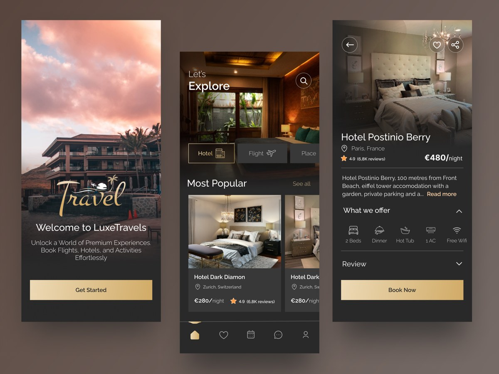
Nikesh Beidwar
Học gì: Ảnh kiến trúc và bố cục rõ tạo chất lượng mà không cần hiệu ứng dày.
Áp dụng: Hero một trải nghiệm; quyền lợi liên quan xuất hiện ngay dưới.
Đã xem thumbnail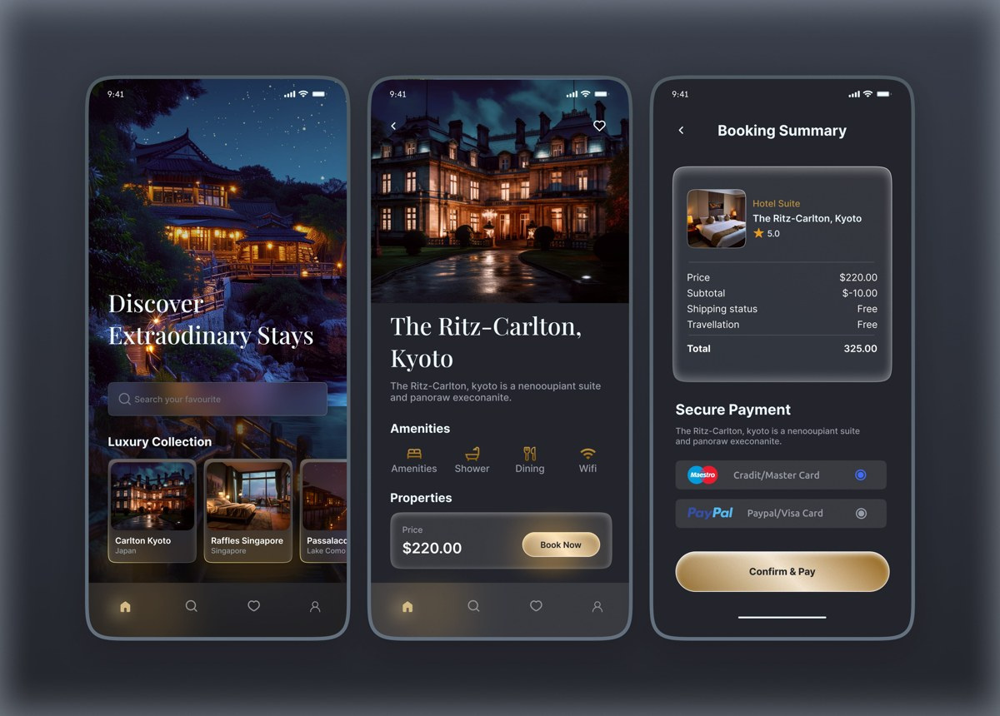
Md Mafizul Islam
Học gì: Tông tối và ảnh định hướng khám phá các trải nghiệm chọn lọc.
Áp dụng: Dùng cho trang đặc quyền premium; đây là concept, không phải bằng chứng sản phẩm Ritz-Carlton.
Đã xem thumbnail; concept của designerHalo Design Studio
Học gì: Nguồn mô tả footage yacht, nhịp chữ chậm và chuyển tiếp nhẹ.
Áp dụng: Làm storyboard hero → chi tiết bằng cùng một ảnh; Home giữ tác vụ tài chính nhanh.
Đọc trang nguồn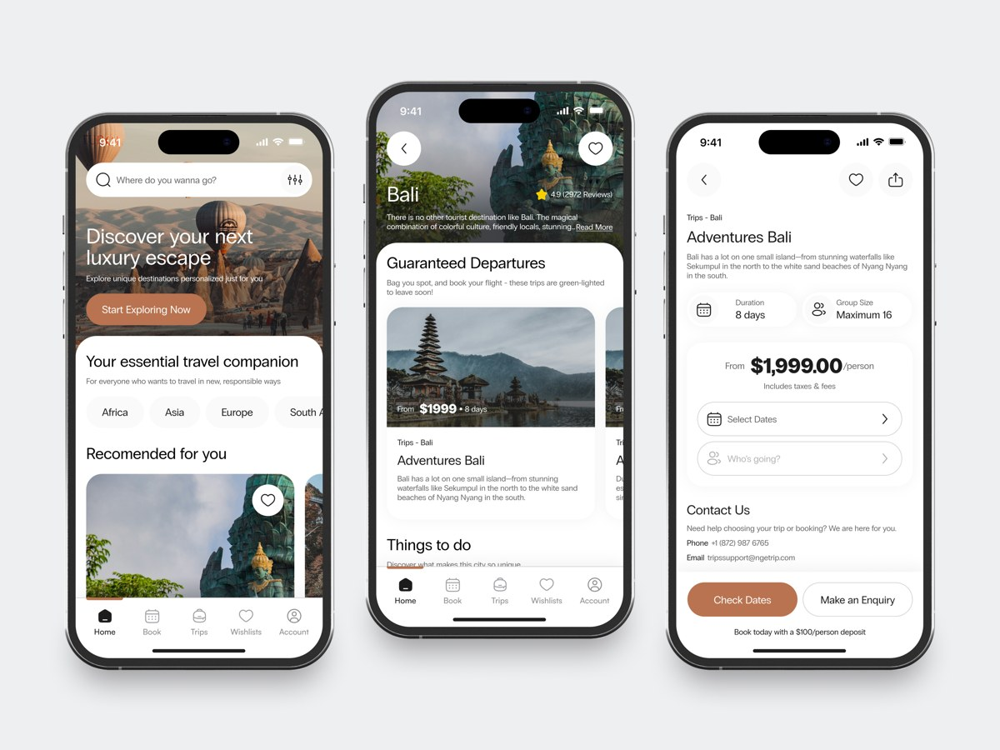
Fireart Studio
Học gì: Thumbnail nền sáng, ảnh lớn và thông tin có phân cấp.
Áp dụng: Thử Home sáng với module điểm/tiền gọn và nội dung tuyển chọn.
Đã xem thumbnailCánh cửa vào hệ sinh thái
Mỗi mini app là một không gian dịch vụ; điểm và ví đi cùng user giữa các không gian.
Độ đầu tư concept: Cao · đánh giá định tính
Mỗi mini app là một không gian dịch vụ; điểm và ví đi cùng user giữa các không gian.
Header → điểm và ví → 3 entry lớn theo nhu cầu → cụm mini app thường dùng → voucher phù hợp → navigation.
Tap một entry mở mini app bằng shared element; giữ tài khoản, trạng thái và thanh toán. Ngay từ Home vẫn có Quét / Chuyển.
Không gian 2.5D; shape kiến trúc tối giản; surface trắng/satin; đỏ có kiểm soát; khoảng cách và scale tạo chiều sâu.
0–2s các entry hiện theo chiều sâu → 2–5s một entry mở thành portal → 5–8s thành mini app thật. Thử UI 2D trước và sau transition.
Danh sách 3 mini app ưu tiên; điểm đến cụ thể; cách quay về; dịch vụ nào chấp nhận điểm và ví trong demo.
Một portal signature; 3 biểu tượng dịch vụ có cùng material; transition mask; miniature service scene tối giản.
Dễ thành showcase game/website. Motion chỉ dùng ở chuyển tiếp; Home cần thao tác như app.
ALEX BENDER / FANCY
Học gì: Nguồn dùng portal để kể việc biến đổi tài sản.
Áp dụng: Biến entry mini app thành cánh cửa; chỉ lấy phép chuyển tiếp, không bê bố cục web sang mobile.
Đọc trang nguồnLusion
Học gì: Dự án dùng cảnh quan, dòng chảy để kể chuyển động và trao đổi giá trị.
Áp dụng: Thử VPoint đi đến một dịch vụ bằng một chuyển tiếp có hướng; cần mobile layout riêng.
Đọc trang nguồnLusion / Phoria / Meta
Học gì: Nguồn mô tả trải nghiệm WebXR gắn nội dung với không gian.
Áp dụng: Chỉ lấy ý niệm dịch vụ có không gian riêng; concept điện thoại không cần XR.
Đọc trang nguồnApple
Học gì: Tham chiếu về trải nghiệm không gian và nội dung trong nhiều lớp.
Áp dụng: Thử chiều sâu các cụm dịch vụ; giữ tap và scroll quen thuộc trên điện thoại.
Đọc trang nguồnLusion
Học gì: Nguồn mô tả nơi thử nghiệm thiết kế, 3D và WebGL.
Áp dụng: Đầu tư một nghiên cứu visual signature trước khi dựng đủ màn.
Đọc trang nguồnPortfolio trên Behance
Học gì: Thumbnail dùng một hệ chất liệu và hình khối nhất quán.
Áp dụng: Thử shape trừu tượng làm signature; giảm số lượng vật thể trên màn nhỏ.
Đã xem thumbnail; chưa xem toàn bộ videoMột ngày được chuẩn bị cho bạn
AI biểu hiện qua việc chuẩn bị đúng hành động và quyền lợi. Câu chuyện demo có thể dùng dữ liệu dựng sẵn.
Độ đầu tư concept: Vừa–cao · đánh giá định tính
AI biểu hiện qua việc chuẩn bị đúng hành động và quyền lợi. Câu chuyện demo có thể dùng dữ liệu dựng sẵn.
Header cá nhân → điểm/tiền tóm tắt → một việc cần làm hôm nay → 3 action nhanh → mini app gần nhu cầu → voucher được tuyển chọn → ô nhập yêu cầu.
Idle → nhập/nói nhu cầu → thinking → 2–3 đề xuất → chọn → mini app → xác nhận. User luôn kiểm soát tiền và nguồn điểm.
Typography sạch và tự tin; nội dung ít nhưng có giá trị; ánh sáng nhẹ; prompt và suggestion card thành một hệ hình khối.
0–2s xuất hiện lời gợi ý theo bối cảnh → 2–4s input mở rộng → 4–8s đề xuất biến thành action card. Orb chỉ là một dấu hiệu trạng thái.
Một tình huống demo; thông tin user giả lập; đề xuất mong muốn; giới hạn điểm dùng được; điểm bàn giao sang mini app.
Một mark AI riêng; 4 motion state; proposal cards; dữ liệu kịch bản học phí hoặc nghỉ dưỡng; confirmation feedback.
Dễ thành chatbot có orb đẹp nhưng không giải quyết việc gì. Demo phải tới được hành động cụ thể.
Zakariya Buhari
Học gì: Nguồn tổ chức hành trình Discover → Plan → Travel theo bối cảnh.
Áp dụng: Home đổi gợi ý khi một nhu cầu đang diễn ra; demo bằng dữ liệu có kịch bản.
Đọc trang nguồnPaperpillar
Học gì: Thumbnail phối tác vụ ví với đề xuất AI và hóa đơn.
Áp dụng: Đưa gợi ý gắn với việc cần làm, như hóa đơn sắp đến hạn.
Đọc nguồn + xem thumbnailAsaad Mahmood / The Small Square
Học gì: Nguồn có sphere được thiết kế và animate riêng.
Áp dụng: Tạo dấu hiệu listening/thinking/done; không để orb chiếm hết Home.
Đọc trang nguồnRobin Holesinsky / rh.design
Học gì: Thumbnail tập trung vào một orb và một câu hỏi, giảm nhiễu xung quanh.
Áp dụng: Thử AI mở thành chế độ tập trung; Home mặc định vẫn có tác vụ nhanh.
Đã xem thumbnailMichael Frankland
Học gì: Nguồn nghiên cứu trạng thái thinking và processing qua motion.
Áp dụng: Define bốn trạng thái AI: idle, listening, thinking, suggestion; phân biệt bằng chuyển động.
Đọc trang nguồnConstantin Calcatinge / Vivid Motion
Học gì: Reference dành cho biểu đạt input bằng orb.
Áp dụng: Thử orb nhỏ trở thành thanh nhập khi chạm; mở nguồn để xem video.
Đọc trang nguồnGiá trị hiện ra bằng ánh sáng
Một dấu hiệu trừu tượng thống nhất biểu đạt tiền, điểm và quyền lợi; bản sắc đến từ hình khối và ánh sáng.
Độ đầu tư concept: Vừa–cao · đánh giá định tính
Một dấu hiệu trừu tượng thống nhất biểu đạt tiền, điểm và quyền lợi; bản sắc đến từ hình khối và ánh sáng.
Header → số dư/điểm typographic lớn → 3 action nhanh → module gợi ý → dịch vụ và đặc quyền. Signature nằm cạnh dữ liệu, không thay dữ liệu.
Khi nhận điểm/chuyển/đổi, signature chuyển trạng thái rồi settle; lịch sử và số dư luôn được ghi rõ bằng chữ.
Đen/trắng sắc nét; ruby hoặc bạc làm điểm nhấn; ít surface; shape điêu khắc có cấu trúc; tránh gradient cầu vồng và rounded toy.
0–2s signature hình thành → 2–5s chuyển giá trị từ nguồn đến đích → 5–7s trạng thái thành công settle. Đây là hướng motion đề xuất.
Một giao dịch đại diện; ý nghĩa từng trạng thái; mức độ abstract chấp nhận được; lựa chọn nền sáng/tối.
3 shape study riêng; lighting study; 1 identity motion; icon nét đồng nhất; mask để ghép vào UI.
Có thể giống crypto/AI startup nếu chỉ có orb và glow; phải gắn signature với giá trị VinClub.
Oxin Studio
Học gì: Nguồn nhấn mạnh số dư lớn, action nhanh và feed giao dịch rõ.
Áp dụng: Dùng làm đối chiếu hierarchy để hiệu ứng không làm mất hành động chính.
Đọc trang nguồnPortfolio trên Behance
Học gì: Thumbnail dùng một hệ chất liệu và hình khối nhất quán.
Áp dụng: Thử shape trừu tượng làm signature; giảm số lượng vật thể trên màn nhỏ.
Đã xem thumbnail; chưa xem toàn bộ videoLusion / Fantasy
Học gì: Nguồn mô tả procedural animation và tối ưu asset 3D cho web.
Áp dụng: Cho concept một dấu hiệu sống; thử render trước, live 3D chỉ khi có lý do.
Đọc trang nguồnLusion
Học gì: Nguồn mô tả nơi thử nghiệm thiết kế, 3D và WebGL.
Áp dụng: Đầu tư một nghiên cứu visual signature trước khi dựng đủ màn.
Đọc trang nguồnLusion
Học gì: Đây là dự án châm biếm cách trình bày sản phẩm thời AI, có chủ đích.
Áp dụng: Học sự nhất quán craft/câu chuyện; VinClub phải dùng tình huống cụ thể để kể giá trị.
Đọc trang nguồnRobin Holesinsky / rh.design
Học gì: Thumbnail tập trung vào một orb và một câu hỏi, giảm nhiễu xung quanh.
Áp dụng: Thử AI mở thành chế độ tập trung; Home mặc định vẫn có tác vụ nhanh.
Đã xem thumbnailBa hướng tạo đối chiếu rõ: premium bằng vật phẩm, premium bằng nội dung, tương lai bằng trải nghiệm chủ động. Đây là đề xuất của tao; lựa chọn nằm ở mày.
| Hướng | Nguồn premium | Nguồn tương lai | Phép thử đầu tiên | Đầu tư |
|---|---|---|---|---|
| 01 Sculpted Metal | Vật liệu, ánh sáng, craft | Thẻ có chiều sâu và phản hồi | Thẻ mở vào VPoint | Vừa |
| 02 Optical Glass | Chiều sâu, sự liền mạch | Điều khiển biến hình | Pill → mini app | Vừa–cao |
| 03 Living Editorial | Ảnh, chữ, tuyển chọn | Nội dung theo bối cảnh | Hero → chi tiết | Vừa |
| 04 Spatial Ecosystem | Thế giới dịch vụ riêng | Chuyển tiếp qua không gian | Entry → mini app | Cao |
| 05 Personal Concierge | Sự chăm sóc cá nhân | Đề xuất và hành động chủ động | Nhu cầu → đề xuất | Vừa–cao |
| 06 Luminous Minimal | Typography, shape riêng | Signature phản hồi giá trị | Điểm → giao dịch | Vừa–cao |
Đọc recipe, xem ảnh và mở nguồn motion. Đánh dấu ba hướng muốn phát triển; có thể ghi lại điểm muốn giữ từ hướng khác.
Đầu ra: shortlist và lý do lựa chọn.
Tao dựng một hội viên giả lập, điểm và tiền riêng; một việc đời sống; một đặc quyền; 3 mini app. Mày sửa những giả định quan trọng.
Đầu ra: content kit dùng chung.
Mỗi hướng có toàn bộ Home và đoạn đầu màn ở kích thước mobile thật; cùng content kit, hierarchy phù hợp từng idea.
Đầu ra: 3 Home hi-fi + rationale.
Mỗi hướng một shot 5–8 giây thể hiện signature trên UI thật. So sánh frame tĩnh, nhịp chuyển và trạng thái settle.
Đầu ra: 3 motion test.
Đánh giá visual, sự khác biệt, tốc độ nhận ra tác vụ, khả năng mở rộng mini app và câu chuyện AI. Dùng ảnh/clip để chọn.
Đầu ra: một hướng và danh sách chỉnh sửa.
Home → đề xuất → mini app / voucher → chọn nguồn thanh toán → kết quả. Dựng video concept 30–45 giây với hành trình này.
Đầu ra: 4–5 màn, prototype, video.
| Thông tin | Hiện có / đề xuất | Ảnh hưởng tới |
|---|---|---|
| Đối tượng, định vị, tự do visual | Đã chốt trong trao đổi. | Cả 5 layer. |
| 3 hướng ưu tiên | Đề xuất 01 / 03 / 05; mày chốt. | Art direction và asset. |
| Hội viên và số dư mẫu | Dùng user giả lập, hạng và số dư ghi là dữ liệu demo. | Thẻ, hierarchy, state. |
| Tình huống demo | Đề xuất: nhu cầu gia đình → tìm quyền lợi → mini app → chọn điểm/tiền → xác nhận. Quy tắc điểm cần xác nhận hoặc đánh dấu giả định. | AI, flow, video. |
| Mini app ưu tiên | V-Smart Pay bắt buộc; đề xuất thêm giáo dục và trải nghiệm/nghỉ dưỡng cho câu chuyện demo. | Entry và navigation. |
| Brand asset và ảnh | Được làm mới; bộ thẻ Blender đã có. Tạo asset sản phẩm riêng sau khi chọn hướng. | Visual và motion. |
| Nơi dựng bản hi-fi | Chưa chốt file Figma đích cho Home; cần trước khi ghi thiết kế vào file. | Review và prototype. |